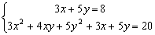

聯立二元一次及二次方程
程式編寫日期: 2006年9月21日
主程式可以計算聯立二元一次及二次方程中 x 的兩個解，每個 x 所對應的 y 值需要自行代入一次方程求得，當然你亦可以用常量程式輔助計算，不過使用常量程式要注意轉換模式會清除記憶，因此建議把計數預設在一元二次模式(亦可以計算MODE 0的所有問題)以減低轉換模式的機會，另外若果有需要計算聯立二元一次方程，可以使用例題2的方法(無須轉換模式)。
注意: 輸入程式前請按 MODE 3確定在二次方程模式，紅色的X是方程變數X，亦即是按 2nd )
主程式 (54字)
( 0ABC + DB2 - AX1B + X2A2)X2 +
(XB2 + X1CB - 2CAX2 - YAB)X =
Y1B2 - X2C2 - YCB
STO EQN
常量程式 (11字，注意:藍色的 - 是按 +/-)
2nd K
* - A / B + C / B = X
2nd K
例題1: 解聯立方程:

按 2nd CL-VAR VRCL，再按 ← = =
3 = 5 = 8 = 3 = 4 = 5 = 3 = 5 = 20 = (顯示第一個x的值為 1)
→ (顯示第二個x的值為0.333333333)
若果沒有設定常量程式，自行計算出當x=1時，y=1，當x=0.333333333時，y=1.4)
若果有設定常量程式，
按 ← = = 2nd K = = (顯示x=1時，y=1) → = (顯示x=0.333333333時，y=1.4)
計算完結後按 2nd K取消常表達式
例題2: 解以下聯立二元一次方程 (只建議使用上述常量程式時使用)

按 2nd CL-VAR VRCL，再按 ← = =
1 = 1 = 7 = = = = (輸入三個零表示計算線性方程)
1 = +/- 1 = 1 = (顯示4) = = 2nd K = = (顯示3)
因此解答為 x = 4 及 y = 3.
計算完結後按 2nd K取消恆量表達式
註: 程式限制為第二個輸入的係數不可以是0，否則會出現Math error。